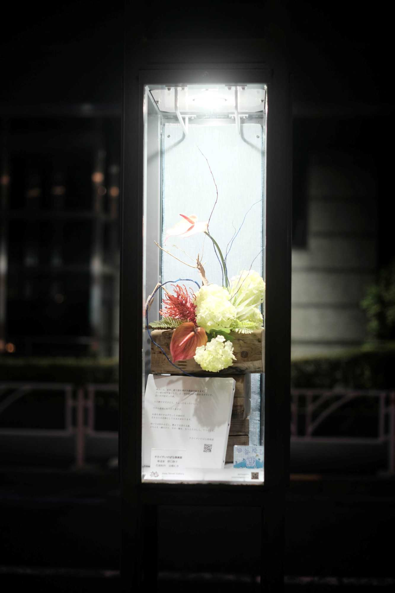
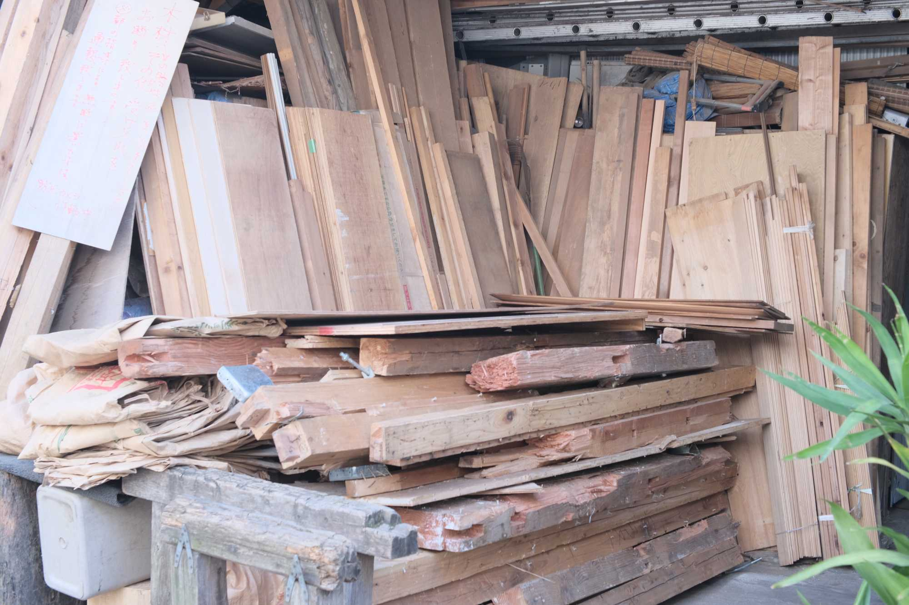

Product ・ ブランド
Products from bathhouse salvage
取り壊される銭湯から、木材・タイル・カラン・鏡などを引き取り、一点物の家具や道具に仕立て直すブランドです。素材にはすでに何十年ぶんもの人の手あとが入っていて、それを消さずに残すことを design の中心に置いています。
使い手が手入れをするほど味が出る仕上げを選び、直し方を添えて渡す。買って終わりではなく、世話をしながら長く付き合ってもらうための道具です。
一点ものの家具・道具、ワークショップを展開中。

